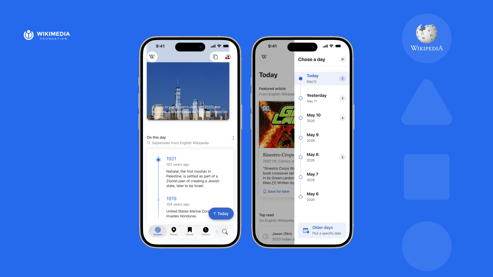
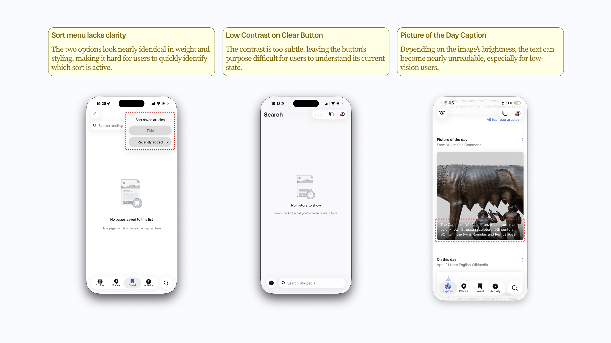
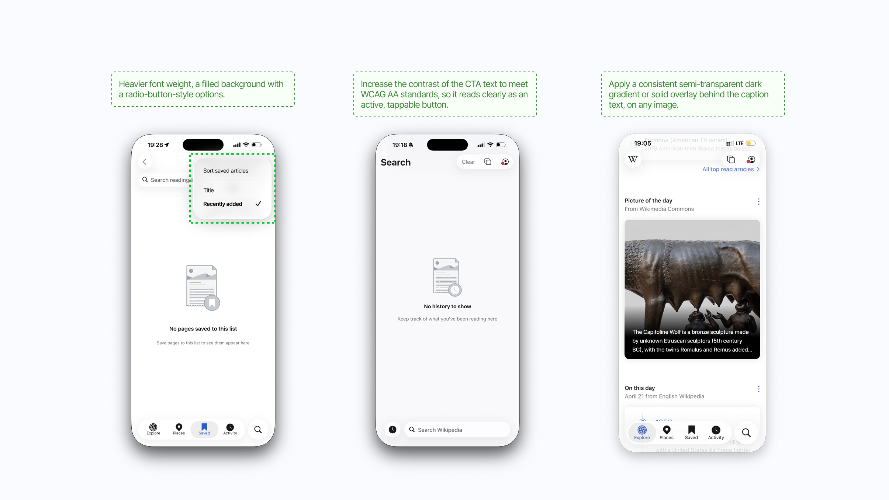
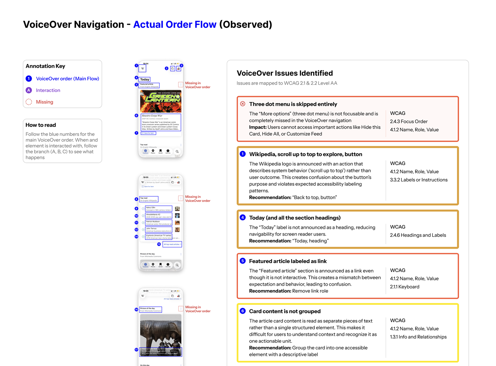
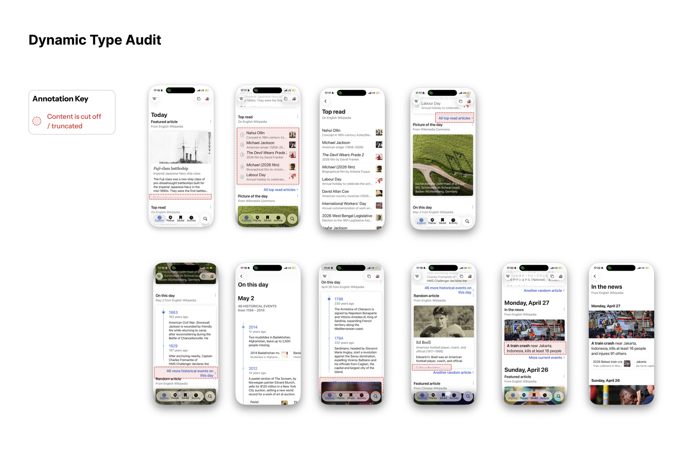

VoiceOver Audit
Evaluated navigation, focus order, labels, and screen reader announcements.
Accessibility audit / Wikipedia iOS
A WCAG 2.2 accessibility audit and redesign of the Wikipedia iOS app, focused on VoiceOver, cognition, and the Explore surfaces people use to discover knowledge.

Context
After Wikipedia's iOS app adopted Liquid Glass under iOS 26, Wikimedia began hearing from people who rely on assistive technology that parts of the redesigned interface had become harder to use. Our team was brought in to understand where discovery broke down and what could be improved without rebuilding the whole product.
Method
Audit accessibility across the four surfaces people use most to find content: Explore, Places, Saved, and Activity.
User personas, WCAG compliance review, iOS 26 integration assessment, audit findings, and a prioritized recommendation framework.
Evaluated navigation, focus order, labels, and screen reader announcements.
Assessed color contrast, visual hierarchy, touch targets, and interface clarity.
Tested text scalability, layout reflow, and content legibility at larger sizes.


Finding 1
People using VoiceOver or cognitive support could move through content, but they had little sense of where the feed began, ended, or changed by day. The interaction problem was less about reading individual cards and more about staying oriented across time.
Iteration
Collapsible day sections shortened the feed, but asked users to keep opening and closing content. A Load More pattern created pauses, but still hid where someone was in the timeline. I chose the side day panel because it preserved the continuous reading flow while giving people a stable orientation tool: jump by day, understand position, and keep moving.

Set aside
Reduced scroll length, but added a repeated tap for every older day.

Chosen
Solved orientation, continuity, and fatigue without rebuilding the feed.

Set aside
Broke up the feed, but gave no clear sense of position.

Final direction
The redesign keeps the article feed intact, but adds a persistent side control that lets users understand the date structure at a glance. For VoiceOver users, the control also creates a more predictable way to move between older and newer discovery moments.
Finding 2
Several discovery modules relied on visual weight and placement to communicate importance. We redesigned the treatment so labels, grouping, and reading order carried the meaning even when visual cues were reduced.


Finding 3
Liquid Glass introduced moments where contrast, layering, and motion became harder to parse. The recommendation focused on practical fallbacks: stronger contrast, simpler layering, and visible states that do not depend on animation alone.

Handoff
We translated the audit into a handoff package that separated quick fixes from larger product decisions. Each recommendation named the affected surface, WCAG concern, user impact, and implementation priority.



Reflection
This project clarified that accessibility recommendations need to be more than a checklist. The most useful handoff connected standards to everyday design decisions: hierarchy, pacing, grouping, contrast, and the small orientation cues that help people keep reading.